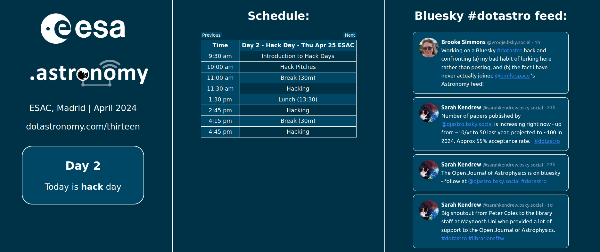

We need an alternative.
Networking is an essential part of science, and Twitter/X is no longer fit for purpose.
We're building tools for Bluesky - an alternative, open-source social network. This page tells you a bit about what we're up to.
Feeds
Anyone can host algorithms that show feeds of posts. We maintain feeds for astronomy topics, like this one:
Astronomy
Conference dashboards and support
Show Bluesky posts live at your conference. Use a dashboard like this one we built for .Astronomy 13:
We'd be happy to help set this up for you.
Everything is open source
We can't lose essential online spaces again. Everything we do is open source, and lives in our GitHub organisation.
What's Bluesky?
We're working on tools to improve onboarding. For now, this blog post should give you a lot more information.